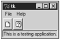
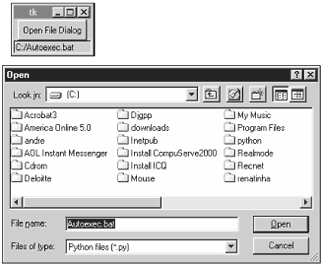

| < BACK | Make Note | Bookmark | CONTINUE > |
Designing Applications
Up to this point, we've seen how to handle the properties and methods of Tkinter's widgets. Now, we will learn the basic steps to write real-world applications.
Tkinter is really powerful, and if you are not satisfied with the widgets that it offers, you can create your own set of widgets. A very interesting and customized widget that you should consider checking before learning how to create your own, is the TreeWidget, which is part of the latest idle distribution. This widget uses a Tk Canvas widget and some images to nicely simulate the TreeView Windows control.
The simplest windowing application that you can create consists of just one window, which is called the root window. The root window is created using the Tk() call.
from Tkinter import * root = Tk() root.mainloop()
If your application needs more than just one single window, you can use the Toplevel widget to create additional windows for you. This widget has a behavior very similar to the window generated by Tk(). This widget also dispenses the use of geometry management functions because the window manager displays this widget, immediately after you call it.
from Tkinter import *
def mywindow():
top = Toplevel(root)
root = Tk()
b1 = Button(root, text="Create new window", command=mywindow)
b1.pack()
root.mainloop()
After adding a lot of windows to your application, maybe now you are wondering whether it would be OK to add a menu to your program. The following code does that for you.
from Tkinter import *
import sys
def newwindow():
top = Toplevel(root)
def aboutwindow():
who = Toplevel(root)
Label(who, text="This is the about window").pack()
root = Tk()
menu = Menu(root)
root.config(menu=menu)
filemenu = Menu(menu)
menu.add_cascade(label="File", menu=filemenu)
filemenu.add_command(label="New", command=newwindow)
filemenu.add_separator()
filemenu.add_command(label="Exit", command=sys.exit)
helpmenu = Menu(menu)
menu.add_cascade(label="Help", menu=helpmenu)
helpmenu.add_command(label="About...", command=aboutwindow)
root.mainloop()
What's next? What about adding a toolbar to our little application? The simplest way to implement a toolbar is by taking a Frame widget and storing all the required buttons on it.
from Tkinter import *
import sys
def newwindow():
top = Toplevel(root)
def aboutwindow():
who = Toplevel(root)
Label(who, text="This is the about window").pack()
root = Tk()
menu = Menu(root)
root.config(menu=menu)
filemenu = Menu(menu)
menu.add_cascade(label="File", menu=filemenu)
filemenu.add_command(label="New", command=newwindow)
filemenu.add_separator()
filemenu.add_command(label="Exit", command=sys.exit)
helpmenu = Menu(menu)
menu.add_cascade(label="Help", menu=helpmenu)
helpmenu.add_command(label="About...", command=aboutwindow)
toolbar = Frame(root)
newimage = PhotoImage(file="new.gif")
b1 = Button(toolbar, image=newimage, width=16, command=newwindow)
b1.pack(side=LEFT, padx=1, pady=1)
helpimage = PhotoImage(file="help.gif")
b2 = Button(toolbar, image=helpimage, width=16, command=aboutwindow)
b2.pack(side=LEFT, padx=1, pady=1)
toolbar.pack(side=TOP, fill=X)
root.mainloop()
As we want our toolbar to be on the highest area of our screen, we have to pack it on the top side of the Frame widget. The fill option being set to X in the toolbar widget enables the toolbar to extend itself, covering the entire extension of the parent frame size.
Note the usage of the PhotoImage class. This class is used to load the GIF files from disk and store them into variables. Then, these variables are passed to the Button options that handle images.
Let's move forward now. The next step is to create a status bar for our small application. We want this bar to be on the bottom side of the window.
from Tkinter import *
import sys
def newwindow():
top = Toplevel(root)
statusbar.config(text="This is a testing application.")
def aboutwindow():
who = Toplevel(root)
Label(who, text="This is the about window").pack()
statusbar.config(text="Hi There!")
root = Tk()
menu = Menu(root)
root.config(menu=menu)
filemenu = Menu(menu)
menu.add_cascade(label="File", menu=filemenu)
filemenu.add_command(label="New", command=newwindow)
filemenu.add_separator()
filemenu.add_command(label="Exit", command=sys.exit)
helpmenu = Menu(menu)
menu.add_cascade(label="Help", menu=helpmenu)
helpmenu.add_command(label="About...", command=aboutwindow)
toolbar = Frame(root)
newimage = PhotoImage(file="new.gif")
b1 = Button(toolbar, image=newimage, width=16, command=newwindow)
b1.pack(side=LEFT, padx=1, pady=1)
helpimage = PhotoImage(file="help.gif")
b2 = Button(toolbar, image=helpimage, width=16, command=aboutwindow)
b2.pack(side=LEFT, padx=1, pady=1)
toolbar.pack(side=TOP, fill=X)
statusbar = Label(root, text="This is a testing application.", bd=1,
relief=SUNKEN, anchor=W)
statusbar.pack(side=BOTTOM, fill=X)
As you could see, we used the Label widget to implement the statusbar in order to be able to change the text value later. Pretty nice, isn't it?
Now, have a look at the final shape of our interface (Figure 15.16).
Figure 15.16. This figure shows the complete example of designing the structure of an application using Tkinter.
In my opinion, one of the greatest things about designing GUI applications using Tkinter is the number of things that are already done and ready to be used by your applications. Some examples are the following modules, which are part of the Tkinter distribution, and implement common dialog boxes.
tkMessageBox— This module implements the classic Yes/No and Abort/Retry/Ignore dialog styles.
tkSimpleDialog— This module implements a base class that can be used to implement other modules.
tkFileDialog— This module implements a file dialog, which is very close to the file dialogs found in the Windows system.
tkColorChooser— This module implements a dialog that allows you to choose and pick a color.
The usage of these modules is very simple. The next example opens a file dialog box, which allows you to browse the files through your local directory, and returns the filename selected (see Figure 15.17).
Figure 15.17. Note that the FileDialog returns the name of the selected file, and our application shows that name on the status bar.

from Tkinter import *
import tkFileDialog
def openwindows():
statusbar.config(text = open.show())
root = Tk()
myfiletypes = [('Python files', '*.py'), ('All files', '*')]
open = tkFileDialog.Open(root, filetypes = myfiletypes)
Button(root, text="Open File Dialog", command=openwindows).pack()
statusbar = Label(root, text="", bd=1, relief=SUNKEN, anchor=W)
statusbar.pack(side=BOTTOM, fill=X)
root.mainloop()
As you could notice, this is a very simple example of the power of Tkinter, but the concept of creating a dialog is as simple as the concept of creating a window.
After creating a Toplevel widget and making the call to open the dialog, the standard dialog only returns to the Toplevel widget when it is closed. When you start facing problems like this, you have several solution options, such as opening several dialogs and making them run in parallel. Or you can create the dialog and only return the control back to the Toplevel widget when the dialogs are closed by the user, creating a modal behavior. This solution is implemented using the wait_window method, which creates a local event loop, and only returns when the window informed as an argument is closed.
Although application modal dialogs are easier to program, most users find them much more annoying. If possible, only use modal dialogs where some action has to be performed before the application can continue.
That's it. Our overview about Tkinter ends here. Next you will see a toolkit that extends the set of available widgets you can use, and next you will find a list of useful resources for a more advanced approach on this topic.
| Last updated on 1/30/2002 Python Developer's Handbook, © 2002 Sams Publishing |
| < BACK | Make Note | Bookmark | CONTINUE > |